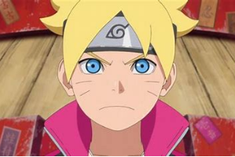

 Saber más
Saber más
Boruto
Boruto Uzumaki es hijo del Séptimo Hokage, Naruto Uzumaki, y se ha unido a la Academia Ninja.
Saber más
Alice in Borderland
Imawa no Kuni no Alice, es la adaptación al manga homónimo creado por Haro Aso en 2010.
Saber más
Dead Note
Reconocido a nivel internacional, siendo catalogado como uno de los animes más famosos de la historia.
Saber más
Seven Deadly Sins
Sigue las aventuras del escuadrón de caballeros conocidos como los "siete pecados capitales"
Saber más
Dragon Ball
Considerada como una de las obras más influyentes y populares de la época contemporánea
Saber más
Dragon Ball Z
Este anime surgió como idea del propio Toriyama, secuela de la mítica Dragon Ball
Saber más